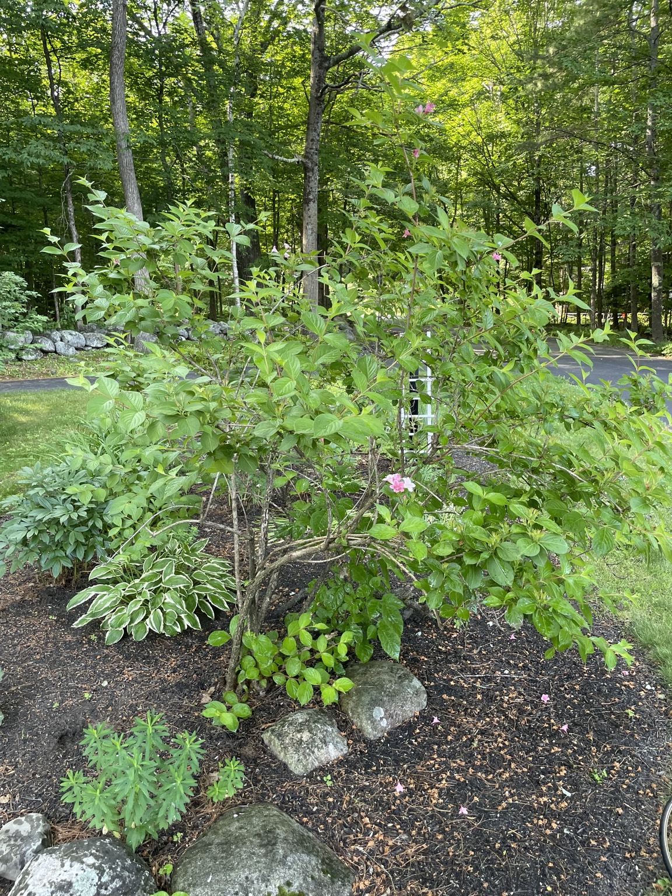
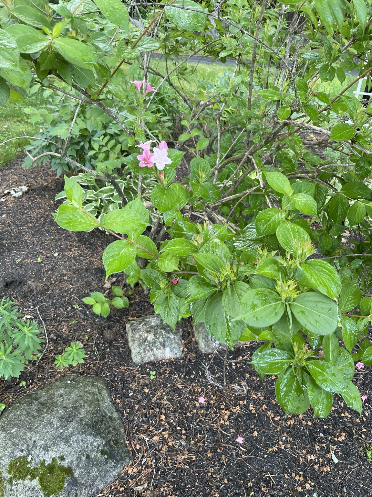

Light
Full sun gives the best bloom; tolerates part shade
Weigela florida



A mature pink-flowering weigela in Lou’s shade-border garden.
Full sun gives the best bloom; tolerates part shade
Deeply during establishment and drought
Average, well-drained soil
Light compost in spring
Prune immediately after flowering; remove up to one-third of the oldest stems at ground level
Aphids, leaf spot and winter dieback